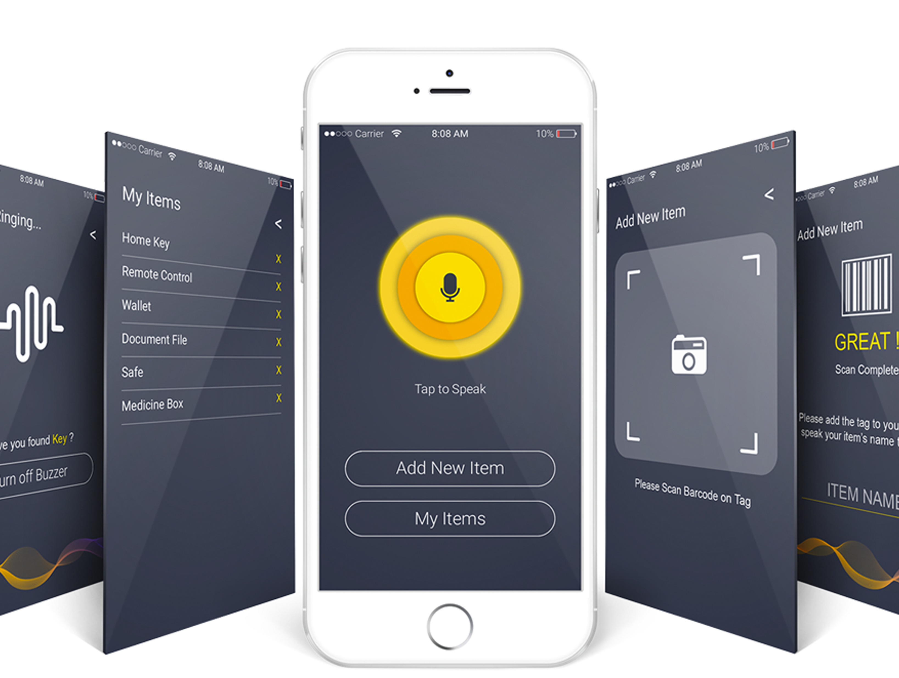

Back to portfolio
Human-computer interaction archive
Early work, lasting product instincts.
Before I led enterprise platforms, I learned to observe behavior, frame the right problem, prototype ideas, and test whether an experience actually worked.
UX research
Interaction design
Usability testing
Front-end development
Selected early projects
The foundations of my product practice
Graduate projects from my HCI practice, preserved as an archive of the methods that still shape how I build products.

Front-end development
DSD Dojo
Gamifying digital self-defense education.
View original case study
UX design & research
Accouter
Exploring a more intentional way to style a wardrobe.
View original case study
UX design & research
Glimpse
Designing a concept grounded in contextual inquiry.
View original case study
Usability testing
Bergen Swamp
Evaluating and improving a nonprofit web experience.
View original case studyContinue exploring